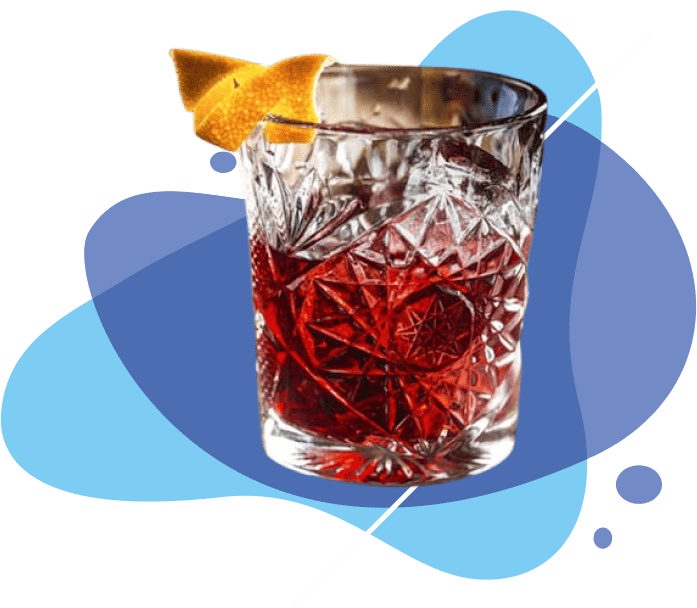
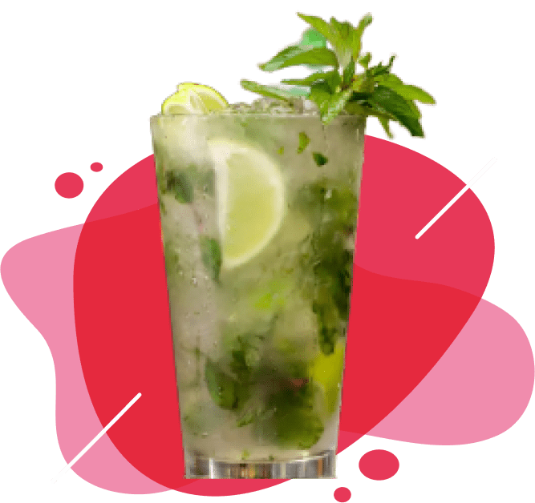
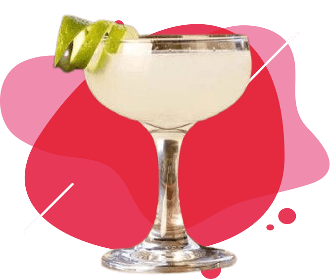
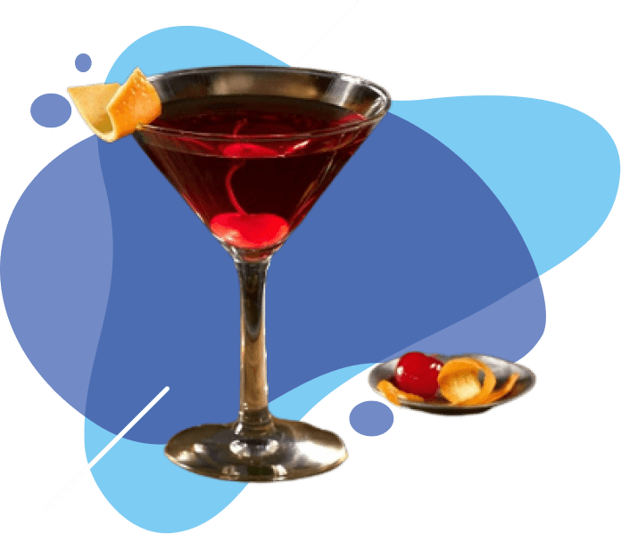
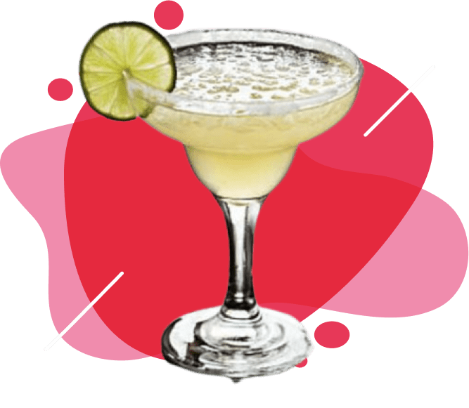

Fernet con Coca
La combinación excelsa. Batman y Robin; Maradona y la pelota; el Che y Fidel y tantas duplas
exitosas de
todos los tiempos. Así es el fernet con coca. Las proporciones ya dependen de la rugosidad del
paladar, de
la aspereza de la tráquea, en fin, de cómo entra esa vertiente amarronada por el cuerpo.
400$
Negroni
Es un cocktail que en todas sus versiones es un clásico. El negroni original tiene gin, campari,
vermouth, decorado con un toque de naranja. Sin embargo muchas personas que les gusta el aperol
piden la versión “Negroni Sblagiato”, este se prepara en un copón de vino y utiliza campari,
vermouth y vino blanco espumoso.
550$


Mojito
El cubano que no está de moda pero nunca pasa de moda. Difícil que no esté incluido en nuestra
carta. Ron, jugo de lima, menta y hielo que transportan con su sabor y frescura a las playas
caribeñas.
400$
Caipi de Frutos Rojos
La caipiriña, o caipirinha, es el coctel más tradicional y conocido de Brasil, se prepara con una
mezcla de limones, azúcar, hielo picado, y la infaltable cachaza brasileña. La cachaça o
cachaza, es un trago o licor a base de caña de azúcar, un poco parecida al aguardiente y al ron
(pero más lejana al ron)
450$

Daiquiri
En su versión tradicional o en la frozen, permanece como uno de los más elegidos por su amigable combinación de ron con jugo de limón o lima.
400$
Manhattan
¿Cuántos barrios de ciudades del mundo pueden jactarse de tener su propio trago? El principal distrito de Nueva York, una isla, puede. Vermut dulce, whisky a base de centeno norteamericano y el toque amargo del bitter conforman el mix que prevalece entre los preferidos globales desde hace más de medio siglo.
550$


Margarita
La versatilidad del tequila es bien conocida en el ámbito de la coctelería, pero por más variantes que existan, el Margarita resulta un imbatible y, a la vez, insignia mexicana.
400$
Aperol Spritz
Creado por los hermanos italianos Luigi y Silvio Barbieri este cóctel vive un gran momento. Su color naranja, sus burbujas, propias del espumante seco (el original Prosecco italiano) y el dash de soda, mezclados con el aperitivo son perfectos para los atardeceres de primavera o verano.
450$